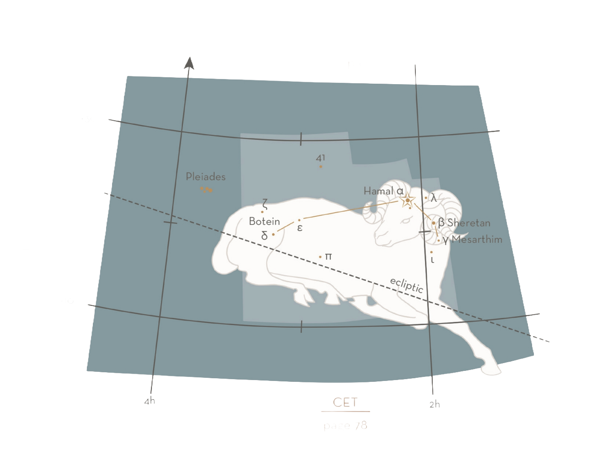

March - April
ARI — ARIETIS / THE RAM
Aries is the first zodiacal constellation, but despite its mythological significance the figure, which lies to the west of Taurus, is not distinctive, apart from the close group of three stars, α, β and γ, marking the head of the ram. Hamal (α Ari) lies on the meridian (north-south) line which runs up to the North Pole from this star through Almach in Andromeda (γ And) and Segin in Cassiopeia (ε Cas). Extrapolating the same line southward to the equator brings us a few degrees to the west of Mira in Cetus (ο Cet).


MAJOR STARS
α — Hamal, 2.0, yellow
Named after the Arabic for “lamb”, this star culminates at midnight around October 22.
β — Sheratan, 2.6, white
From the Arabic for “mark” or “sign”, the name Sheratan was at one time used jointly for this star and Mesarthim (γ Ari). The stars were so called because they marked the March equinox point, 0° Aries, which fell close by here c.300—400 BCE.
STARLORE
Marking the March equinox point, Aries was held in high status in the formative period of Greek skylore. The Roman poet Manilius (1st century CE) declared it “the prince of all the Signs”. The Assyrians of the Upper Tigris, who would sacrifice a ram in honour of the equinox, knew the constellation as “altar” and “sacrifice”.
In Greek lore, Aries represents the legend of the Golden Fleece. According to the poet Apollonius of Rhodes (3rd century BCE), King Athamus of Boetia married Nephele. Athamus became disenchanted with his wife and remarried. His new wife, Ino, saw the children of the king’s previous marriage, especially the boy Phrixus, as a threat to her own offspring. She therefore wickedly devised an ingenious scheme to bring about the child’s death. She went secretly to the stores of corn seed kept for sowing in the spring, and scorched the precious grains. The resulting crop failure threatened the population with starvation. Athamus sent a messenger to the oracle at Delphi, but Ino had already bribed the emissary, who returned saying that the oracle required the young prince as a sacrifice before the corn would grow again. Phrixus was duly prepared for sacrifice, but hearing the desperate prayers of Nephele, Hermes, the messenger of the gods, intervened and sent a wonderful ram with a fleece of gold to snatch the boy from the altar.
Phrixus had a sister, Helle, who was also rescued by the ram, but as the magical beast crossed the narrow straits that separate Europe and Asia, Helle fell to her death. From that time on, these straits were called the Hellespont (“sea of Helle”) in her memory.
The ram brought Phrixus to the land of Colchis on the shores of the Black Sea. Here Phrixus, in gratitude for his salvation, sacrificed the ram to Zeus (Jupiter in Roman myth), and gave its Golden Fleece to King Aeëtes of Colchis. Aeëtes had the Fleece protected by a dragon in a sacred grove of the war-god Ares (Mars), just as in later astrology the zodiacal sign of the ram is placed under the dominion of the war-god. The Fleece remained in the grove until stolen by the hero Jason (see pages 66—8).
